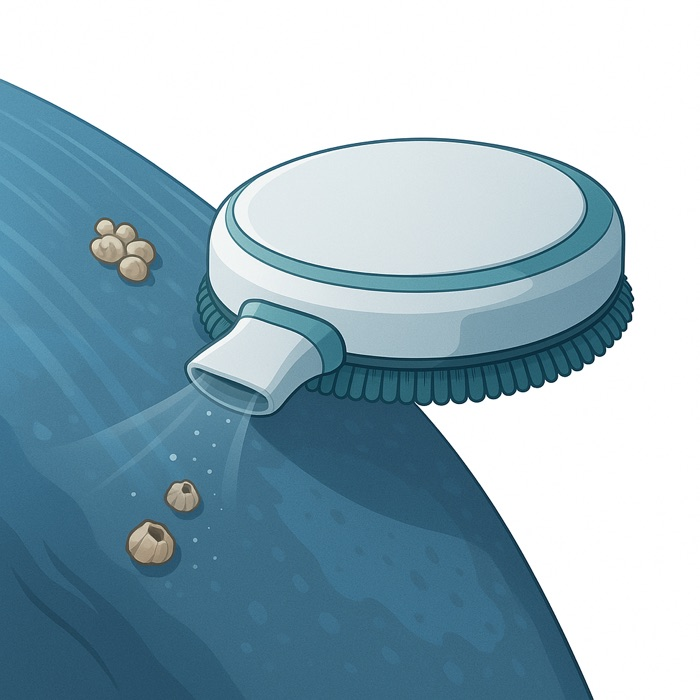
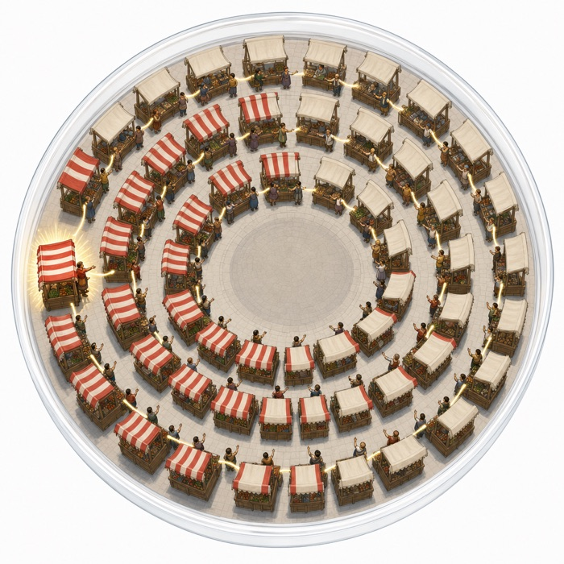
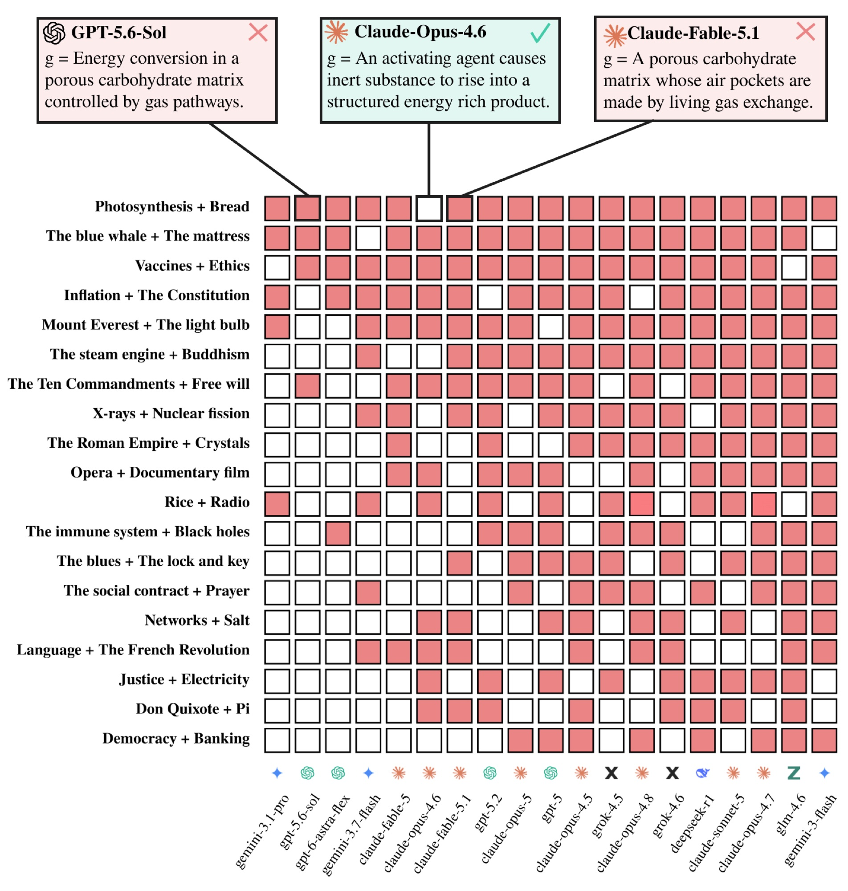
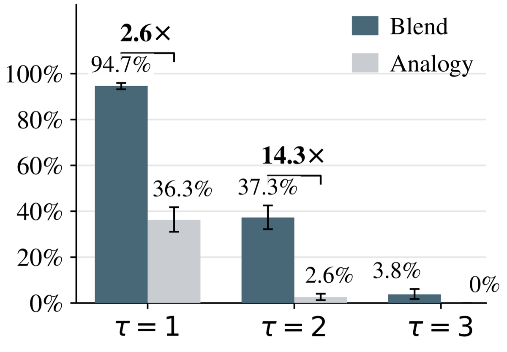
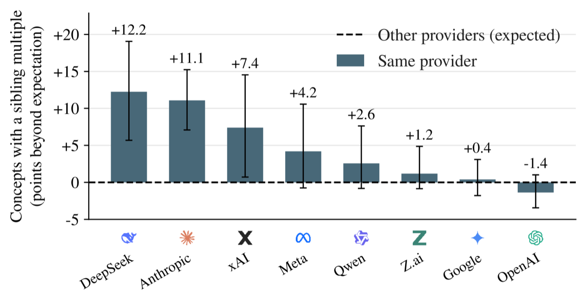
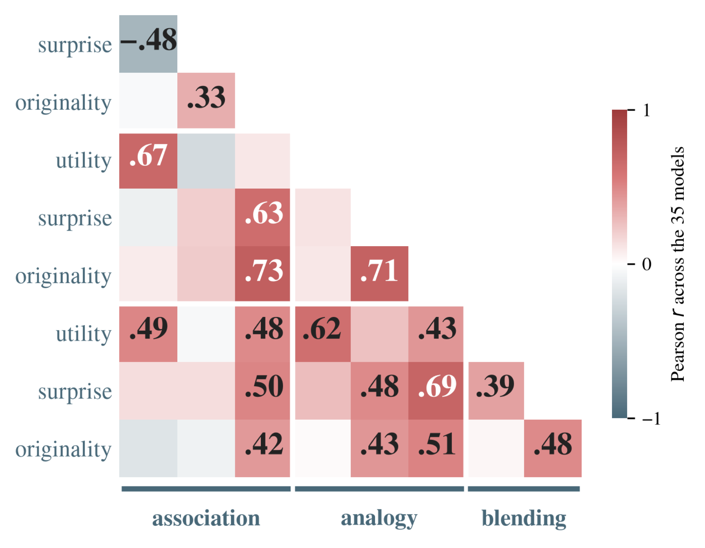
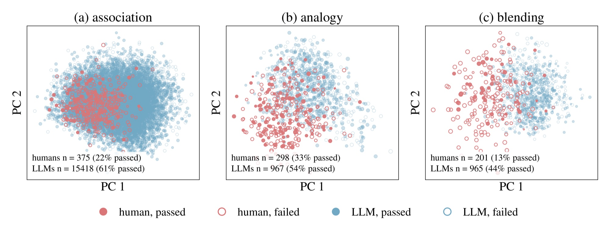
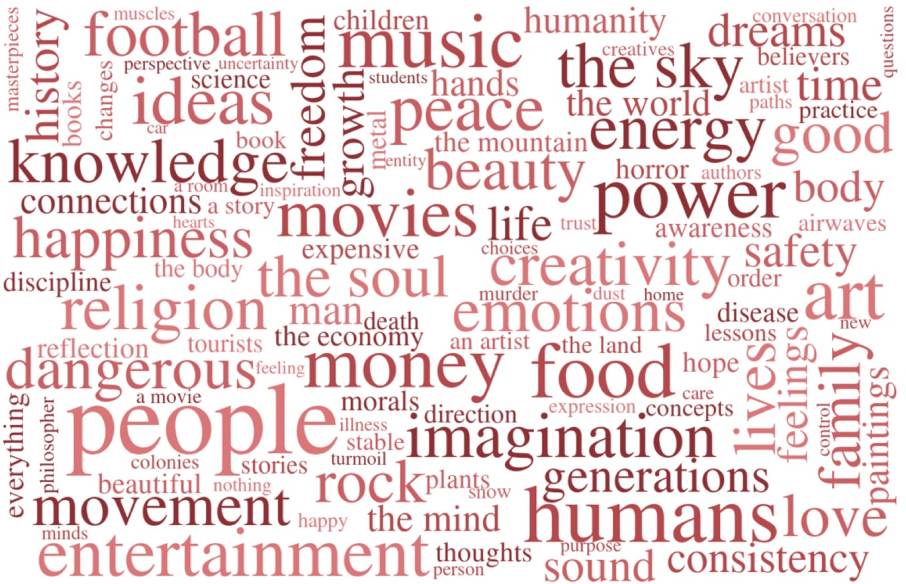
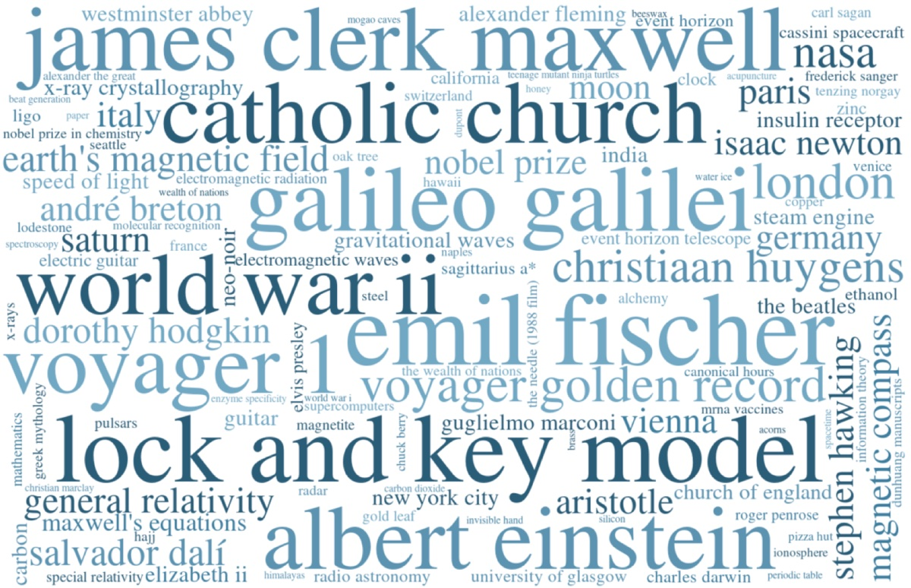

Kombine is a benchmark for combinatorial creativity, the ability to combine familiar ideas in unfamiliar ways. Models must discover associations, analogies, and blends between random, unrelated entities, then use them to invent new concepts. Across 35 LLMs, models are much worse at blending than at association and analogy, because they struggle to find a shared abstraction between the inputs (an abstraction bottleneck). They also show inventive homogeneity: one in five invented concepts reuses properties another model invented for the same inputs. In a study of 75 people, humans scored below nearly every LLM, but they reach different regions of semantic space, which points to human–AI collaboration.
Combinatorial creativity, the process of combining familiar ideas in unfamiliar ways, is one of the foremost engines of scientific, technological, and artistic progress. This work introduces Kombine, an LLM benchmark for combinatorial creativity tasking models to discover surprising, original, and useful associations, analogies, and blends between unrelated entities, and to use those analogies and blends to invent novel concepts by re-combining the parts of existing ones. In a large-scale study across 35 LLMs, we find that: (1) LLMs are 10–16 percentage points better at discovering associations and analogies than blends, and (2) exhibit an abstraction bottleneck on blending, in which even frontier LLMs struggle to find a shared abstraction between inputs and instantiate a coherent blended space. (3) LLMs also exhibit inventive homogeneity, in which one in five concepts invented for a given item reuses properties invented by another model. Moreover, (4) models are 14× more likely to reuse other invented properties on blends than analogies, and (5) models from the same provider are 2.3× more likely to reuse properties than those from different providers. Next, in a comparative study involving 75 humans on the same tasks, we find that (6) humans score below nearly every LLM on each task and (7) both humans and LLMs find blending most difficult, but association is easier than analogy for LLMs, while analogy is easier than association for humans. Lastly, (8) humans and LLMs access distinct regions of semantic space on each task, suggesting that combinatorial creativity could benefit from systematic human-AI collaboration to enhance conceptual diversity. In summary, we provide a framework to assess progress towards LLMs, AI systems, and human-AI collaborations more broadly, that can elicit combinatorial creativity in a setting relevant to scientific and technological innovation.
Each item gives two entities, sampled from Wikidata, with no known relationship. Colours mark the two inputs (u, v), the invented concept, and emergent structure.
Association Radio → The Milky Way claude-opus-5
(Radio, aired hit, Vincent (song)) → (Vincent (song), tribute to, Vincent van Gogh) → (Vincent van Gogh, painted, The Starry Night) → (The Starry Night, swirls depict, The Milky Way)
Analogy The blue whale :: The mattress claude-fable-5

Shared structure: whale covered by epidermis, which hosts barnacles, which feed on plankton; mattress covered by ticking, which hosts dust mites, which feed on skin flakes.
Invention: the vacuum cleaner is projected through the mapping to give a whale groomer drone, which removes barnacles, cleans the epidermis, and maintains the blue whale.
Blending Adam Smith + Bacteria claude-opus-4.5

Generic space: autonomous agents whose local signals generate collective order without central control.
Invention: a market colony, which coordinates through local signals, specializes via division of labor [u], adapts through replication [v], and evolves its exchange protocols [emergent].







Scores are percentages of each dimension's maximum. A task's composite is the mean of its dimensions, and Overall is the mean of the three tasks. Click a column to sort.
@misc{schapiro2025kombine,
title={Measuring Combinatorial Creativity in Large Language Models and Humans},
author={Samuel Schapiro and Akshay K. Jagadish and Alexi Gladstone and Qiawen Ella Liu and Sumuk Shashidhar and Jonah Black and Royce Moon and Dilek Hakkani-T{\"u}r and Heng Ji and Claire E. Stevenson and Lav R. Varshney and Roger E. Beaty and Thomas L. Griffiths and James A. Evans},
year={2025},
eprint={2509.21043},
archivePrefix={arXiv},
url={https://arxiv.org/abs/2509.21043}
}